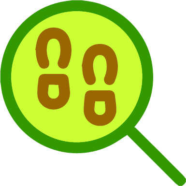

Ruta Camiño Real
Mapa creado GPS Visualizer Programa de emprego Xuventude Terras de Iria 2023
Por favor, espera mentras se carga o mapa...
Datos da Ruta Camiño Real
- Dificultade técnica: Moderada
- Distancia: 5,58 km
- Desnivel: 102 m
- Altitude máxima: 88 m
- Altitude mínima: 8 m
- Tipo de roteiro: Solo ida li>
Símbolos no mapa
-
 Inicio da ruta
Inicio da ruta
-
 Fin da ruta
Fin da ruta
-  Puntos de interese
- Descargar a imaxe do mapa
Meteoroloxía na Ruta

Fonte de textos e imaxes: Terras de Iria 2020 | Concello de Padrón | Concello de Rois | Concello de Dodro | Obaixoulla.gal | Google Earth | OpenStreetMap